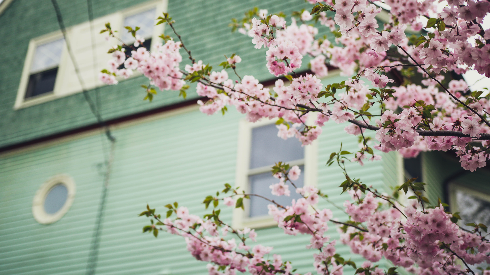
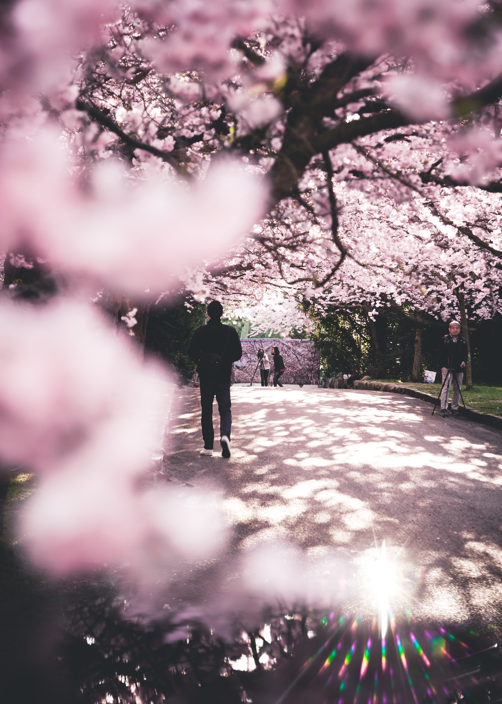

The cherry blossom tree is truly a sight to behold, especially when it is in full riotous bloom.

In the beautiful seasom of spring cherry blossom flower at the bank of river can be very heart melting and also facinating to some people.
the cherry blossom represents the fragility and the beauty of life. It's a reminder that life is almost overwhelmingly beautiful but that it is also tragically short.
Its meaning is different in the both Chinese as well as Japanese cultures. This is because these two cultures are wide apart and the significance that this flower holds in both countries is different. Let us have a look at the meaning of this tree according to the Chinese as well as Japanese culture.
The Japanese cherry blossom is interpreted as 'transient of life', since it is very fragile and has a short blooming period. There is an old story attached to this tree that values sacrifice. It is said that there is an Jiu-roku-zakura (the Cherry tree of the Sixteenth day), in the Iyo district of the country. This tree grew on the lands of a Samurai for over a hundred years. When the Samurai became old, the tree began to die. The Samurai felt really bad for the tree. He was a brave and honorable man. Hence, he thought up of a way to save the tree's life.
The cherry blossom signifies power in China, and according to the Chinese culture, it is also a symbol of feminine dominance. It indicates female beauty and sexuality. Its meaning in China according to the language of herbs is love. Therefore, it is often gifted as a symbol of life in this country.
